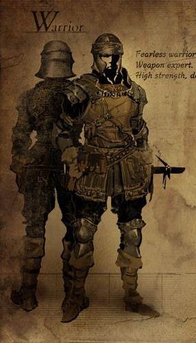
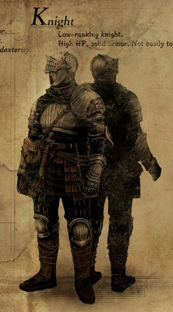
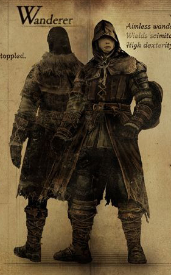
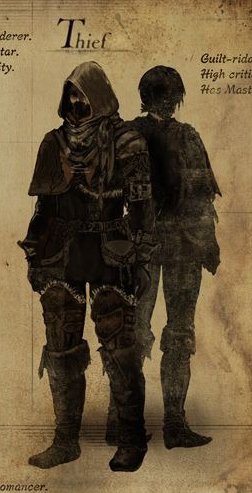
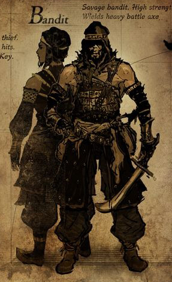
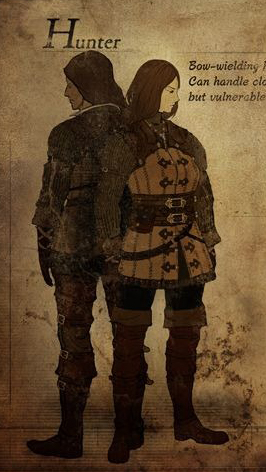
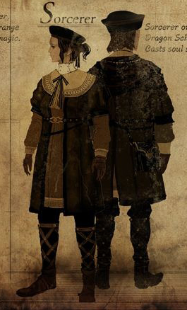
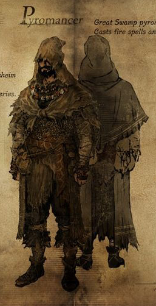
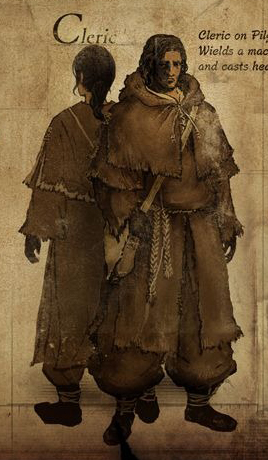
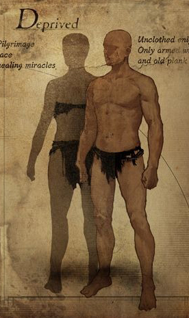

Character Stats
Dark Souls, being an action role-playing game, relies heavily on in-game character stats that affect combat, what your
character can do, and even how your enemies interact with you.
It's important to
know how each of these stats will affect your character, especially when picking a starting class and viewing equipment.
We can break down these stats into two groups: primary attributes, secondary attributes.
Primary Attributes
These stats are what you will be building throughout the game; slowly growing stronger and pouring the souls you collect
into these attributes. A firm understanding of how these affect your character is important, since you can't undo any
choices here and your starting class already has some stats allocated for you.
Level
Your level is a general indication of how powerful your character is and increases every time you increase a primary
attribute. To level up, you simply need to spend souls at a bonfire and allocate them to the attributes that you want. As you
level up, the game requires you to spend more and more souls for each level, meaning that as the game progresses, your
character becomes less and less flexible. Your character will be set in his ways by the end of the game. Your level is also used
to match you with other players in the game's cooperative and competitive multiplayer features. You will generally be
matched with players that are around your level.
Now we will talk about the stats that you can manually upgrade.
Vitality
Vitality determines how many health points your character has and is generally useful for all characters. If your character
is dying to only a few hits, a larger health pool can make you sturdier and allow you more leniency for tactical errors.
Attunement
Attunement simply determines how many sorceries, miracles, or pyromancies you can "equip" at any given time. Note that the
actual number of slots is only derived from attunement and ranges from 0 to 10. Since this implies that the conversion is surjective, if you've reached enough
attunement
for X slots, you shouldn't be pouring more points into attunement unless you plan on reaching X+1 slots; those extra points few extra points will give you no value. Be aware that some of the more powerful spells require more than 1 slot to equip. Here
is a simple table showing each of attunement's derived slot values.
| Attunement | 10 | 12 | 14 | 16 | 19 | 23 | 28 | 34 | 41 | 50 |
| Spell Slots | 1 | 2 | 3 | 4 | 5 | 6 | 7 | 8 | 9 | 10 |
Endurance
Your endurance will affect two very important stats and one less important stat. It increases the number stamina points you have,
meaning that you can run, roll, block, and swing your weapon more often before becoming fatigued. This is great, because once
you've become fatigued, you're helpless against an opponent. Endurance also affects your equip load, which controls
how much your character can equip at once and how fast they move. Equip load has a big impact on your character, which is why you should be sure to read more about
it in the secondary attributes section. Lastly, endurance raises your bleed resistance. Bleed damage often accompanies a blow
from a very sharp weapon or a monster's claws. Overall, you shouldn't be building your character based on these
resistances because A) the situations where resistances are useful are inherently situational and if you're having trouble in
those situations, you can easily just equip resistant armor or items, and B) you gain resistances naturally from leveling up, and
since resistance stats suffer from diminishing returns, by the time you reach the end of the game, none of the extra points you
allocated to resistances will have much of an effect, if any. I'll bring up resistances again when we talk about the attribute
called resistance.
Strength
Strength allows you to meet the strength requirement of certain weapons. Most weapons also have a proficiency rating, like D or
A, which tells you how much your strength is going to improve that weapons damage. So if you have a lot of strength, say 40,
then a weapon with grade A strength scaling is going to much better for you than a weapon with D strength scaling. Also, two-handing a
weapon effectively increases your strength by 50%, allowing for more damage and making it easier to meet a weapon's strength
requirement.
Dexterity
Dexterity works in pretty much the same way as strength. Having it allows you to meet a weapons dexterity requirements, and
having more of it will increase its damage, depending on that particular weapon's dexterity scaling. Dexterity will also
marginally increase your spell casting speed, though I wouldn't recommend putting points into dexterity for that reason alone.
Resistance
The attribute called resistance, has the effect of increasing physical defense, flame defense, and poison resistance.
Each of these benefits are completely marginal and I would not recommend putting any points into resistance. The
reason why is because physical defense, flame defense, and poison resistance all suffer from diminishing returns, as well as gain points from just leveling up. Once you
reach the end game, all of the points you invested into resistance would have been a complete waste. The effect they
will have on your character will be completely unnoticeable. Also, if you feel inclined you to increase your flame defense or
poison resistance for a particular enemy or environment, it's much cheaper to simply equip some resistant gear for that particular
situation; that way you're not wasting precious level ups.
Intelligence
Intelligence increases the damage of your sorceries (not miracles or pyromancies) depending on the scaling of your catalyst.
Having enough intelligence will also allow you to meet the requirements of said sorceries. A few weapons also have
intelligence scaling as well, making them great for any sort of melee/caster hybrid character. You can also modify most weapons
via ascension to give it some intelligence scaling regardless of the weapon's original characteristics.
Faith
Faith works very similarly to intelligence. It increases the power of your miracles and allows you to meet the requirements of
said miracles. It also has the added bonus of marginally increasing your magic defense. Some weapons also come with faith
scaling and you can usually give a weapon faith scaling via ascension.
Secondary Attributes
Secondary attributes are basically just stats that you don't directly control, but which are influenced by your primary
attributes and other sources.
Health
Your health comes from vitality and is represented by the red bar on the upper-left part of the screen. Whenever you get hit,
you lose health and when it reaches zero, you die. You can restore
it by resting at bonfires or by consuming items, particularly your estus flask; which refills at bonfires as well.
Stamina
Stamina comes from endurance and is represented by the green bar in the upper-left part of the screen. This depletes every time you perform an action like running, blocking, or swinging your sword. When your stamina reaches less than zero, you will no
longer be able to perform these actions until it recharges automatically in a few seconds. This means that it is important
to time your attacks and make sure that you are managing your stamina correctly. There are also several items in the game
that can increase the rate at which your stamina will recharge, so be sure to look out for those.
Equip Load
Equip load will determine how fast you move and roll around, as well as marginally determine how fast your stamina recharges.
This can be increased by your endurance stat and there are also a few items that do this as well. Character speed is
based on your equip load. To break it down, if your equipment weight is less than or equal to 25% of your equip
load, you will be in fastest category and be a very agile fighter. Between 25% and 50% are the medium speed characters, which
are still fast enough to dodge almost all attacks. Then there is between 50% and 100%; which can be quite slow. You shouldn't
try for a slow character unless you have the armor to back it up and plan on blocking rather than rolling away
from attacks. If you are over 100%, then your character will become overburdened; they will move very slow, have a hard time
swinging their weapon, and collapse when trying to roll. Being above 100% weight is not recommended for any character build.
R/L Weapon 1/2
This stat simply shows the amount of damage you will deal with the weapon currently equipped in that particular slot. Note,
you can always use your fists, so an attack value is still shown for unequipped slots. Also note, magic catalysts and shields
also show up here, but it is only showing damage if you would club an enemy with said item, which is not the same as
damage from spells that you cast from a catalyst or how much you block with a shield. This damage is calculated based on that
weapon's particular damage default in addition to any scaling it might have with your other stats.
Physical Defense
Pretty straight forward. The more physical defense you have (most of this comes from your armor), the less damage you take
from physical attacks. The game divides physical attacks into three categories: thrust, strike, and slash attacks. Armor
blocks each of these types of attacks with separate values. The first number before the three subtypes is actually just
an average of the three. It's fine if you only worry about the average defense, since most melee attack
combos are actually a combination of thrusts, strikes, and slashes.
Magic Defense
Magic defense protects you against magical attacks (go figure). Magic attacks usually have a blue or crystal-like effect.
Sorceries fall under this category of attack.
Flame Defense
Flame defense protects you against flame attacks. Pyromancies fall under this category. Having a shield with a high flame
reduction is very effective against a plethora of enemy types.
Lightning Defense
Lightning defense protects you against lightning attacks. Many different miracles fall under this category, as well as anything that looks
like a lightning bolt. Be warned that taking lightning damage while standing in water will deal extra
damage to you.
Poise
Poise determines how many hits your character can take in quick succession before becoming briefly staggered. If you
become staggered against another player, you are most likely going to die. Note that you can become staggered even while
blocking. This means that even if you have all of the health in the world and a massive shield to hide behind, you can't
take hits forever. You should either try to keep a distance between yourself and hard hitting enemies, or at least wear
very heavy armor if you plan on taking a few hits.
The following three resistances work in similar ways, in that how much you have of that resistance determines the size of
that stat's resist bar. Whenever you get hit by something that causes bleed, poison, or curse, a meter appears. (Again, the
larger your stats, the larger the meter) It will go down slowly, but every time you get hit it will increase. Once it
reaches full, you take on that effect. This effect is different for each of the ailments. Note that these ailments
can even bypass shields, which makes them very effective against tanky characters.
Bleed Resist
Taking hits from bleed/sharp attacks will fill up a red bleed meter. When your character reaches a full bleed meter, they will instantly lose 30% of their total health. Bleed Resist lengthens your bleed meter, making it harder to fill up. In combination with the
stikes needed to reach this much damage, a full bleed meter often means death. Note that causing bleed on
an enemy will also damage their health by 30%, though this is set to a much lower percentage for bosses. Using fast-hitting weapons to build up the bleed meter of enemy quickly is an effective strategy.
Poison Resist
Taking hits from poison attacks will fill up a green poison meter. Once your poison meter is full, it will turn purple and slowly decrease until it has reached zero again. During
that time, you will very slowly take damage. Your meter cannot go back up during this process, though you can cure your
poison with an item or spell in the meantime. Poison resist lengthens your poison meter, making it harder to fill up. Poison is actually split into two categories: poison and toxin. Toxin is
different from poison in that it has its own meter, but is still prevented by poison resist and is still curable (with different items). The main
difference is that toxin will kill you much faster than poison. Acting quickly if toxinned will prevent a sudden death.
Curse Resist
Curse has its own meter that behaves similar to bleed and poison. There are only a few enemies in the game that can curse you, but you will definitely have a bad day if you do happen to
get cursed. After you become cursed (often by standing in some funny looking smoke for too long), your body becomes petrified (you die)
and you now have only half of your health bar. When you become cursed, it stays with your character even after subsequent deaths.
The only way to become uncursed is to use a purging stone or by
talking to a certain NPC. One other side effect is that where you died, you leave a petrified statue of yourself, which
other players can see in their own world as a warning. So, if you see petrified humans nearby, it means an enemy that can
curse you is nearby and you should be wary of your surroundings.
Item Discovery
Some enemies will randomly drop items based on a list of droppable items; a loot table, if you will. Item discovery increases
the odds of those items dropping. It is increased by equipable items and by how much humanity you have. It has no
effect on combat.
Attunement Slots
As mentioned earlier in "Attunement", the more attunement you have, the more attunement slots you can have. Most spells only
require a single slot, but some may require two. You can "equip" your spells at bonfires, and you can even equip more than
one of a single spell; doing so will multiply the number of charges accompanying that spell by the number of copies you have of that equipped spell.
Humanity
Humanity is one of the most obscure stats you have, as well as being the most prominently displayed. In short, it does very
little. Humanity in the upper-left corner of your screen is often referred to as "soft" humanity, because you lose it with
your souls when you die, and you may lose them permanently if you're unable to retrieve them. The item called humanity (which
we often call "hard" humanity) simply sits in your inventory until you consume it, at which point it becomes soft humanity.
You cannot lose items in your inventory if you die, so it is often safest to keep your humanity in this state unless needed.
You can use your soft humanity like a currency at bonfires. With it, you may transform from undead form to human form for the cost
of one humanity, or you may kindle a bonfire for one humanity, which you can only do once you are human. Kindling a bonfire
increases the number of estus flask uses you gain whenever you rest at that particular bonfire. Kindling is permanent,
even for subsequent playthroughs. Being human opens up much of the game's multiplayer components. As such, you
will be able to invite friendly players to your world, invade other players as a hostile phantom, and hostile phantoms will
also be able to invade you. The benefit of summoning friendly phantoms is often weighed against the risk of being invaded.
Holding onto soft humanity also increases your item discovery (only up to 10 humanity); this is useful if you plan on
"farming" for items.
Classes
At the beginning of the game, you will have the option of choosing between 10 different starting classes. These classes come
with their own starting level and unique stats, as well as unique equipment and spells. Each equipment set feels different, but in the
end, you can find items (even from the other classes) and build your character's stats however you want. The way your journey starts may not be how
it ends. What you choose as your starting class really has no bearing on how you eventually
feel comfortable playing the game, and there is nothing unique about a particular class once you progress enough and
have more options available to you. Only for the most committed min-maxers, does picking the "right" class have any real end-game
importance. What I would like to emphasize though, is that you should try to choose a class that matches your playstyle.
Finding out what you like or don't like early in the game can let you mold your character efficiently, as well as increase
your enjoyment of Dark Souls' often difficult beginner's hump. So just choose what looks interesting to you. While
talking about each class, I will focus mostly on analyzing the play-style that is most associated with that class, and hope to be able to match your playstyle with the class that corresponds the most with it.
Warrior
 The warrior focuses on melee combat. He has a good balance of quick movement, sturdy armor, and strong attacks. No tricks; just fast, tactical, close-range combat. I highly recommend this class if you desire the well-balanced melee combat that this game is focussed on.
Knight
 The knight is the tankiest class at the start. He prefers to let his enemies come to him and waits for opportunities to strike from behind his sturdy shield. With only a few extra points invested, he can also become a solid miracle caster; allowing him to take hits and recover efficiently. His biggest downside is that he is also the slowest class. His starting equipment puts him in the "greater than 50%" equip load range, meaning that you probably won't be rolling away from hits unless you invest more into endurance first. He also starts in the "Way of White" covenant (this makes you less likely to be invaded), but doesn't really matter since all characters can join this covenant right away anyways.
Wanderer
 The wanderer plays much like the warrior in that he's an all around good melee fighter, but he has a much larger emphasis on dexterity based weapons and rolling to avoid hits. If you desire a fast and formidable combatant with a high level of skill required, then the wanderer is for you.
Thief
 The thief is an even further evolution of the the wanderer. The thief almost never attacks head on and almost never blocks attacks with a shield. He instead focuses on using special combat moves like parrying and backstabbing to subdue their enemies in short order. The thief also starts the game with the master key, which allows him to reach many areas of the game earlier than you normally would be able to. If you like fighting dirty, then perhaps you should try the thief, though be warned that he requires a high level of skill to play well and can take almost no direct hits.
Bandit
 The bandit is another melee fighter but with less armor than most and tends to carry slow weapons that deal large amounts of damage in a single hit. He starts the game with a meaty battle axe, but can easily transition into using weapons that are even larger than himself. If you enjoy the thought of pummelling your enemies with a single massive strike, then the bandit is the best start for that kind of playstyle. He also starts with one of best shields in the game, which allows him to block 100% of all physical and poison damage.
Hunter
 The hunter classifies as a jack of all trades but a master of none. Rather than focusing on a single playstyle, the hunter will try use whatever is best against their current enemy. They start with big bag of situational items and a bow, which allows them to pick off enemies at range before engaging in melee combat. Note that you will need to find/purchase arrows as long as you continue to use the bow, which can be bad if you die to enemies repeatedly and are making no progress. Ammo isn't super expensive but it's something to keep in mind.
Sorcerer
 The sorcerer is considered to be a powerful and easy class to use. Almost all of your combat will be at range thanks to his assortment of powerful sorceries. Their ammo (spell charges) come back after resting at a bonfire, so they can often fight like a hunter but don't have to worry about buying arrows. After finding and equipping a large number of spells, you begin to have a great number of options when choosing how to engage the enemy. The sorcerer can be quite fun to play if you're the type of person that likes to have a trick or two up their sleeve.
Pyromancer
 The pyromancer is much like the sorcerer but focuses much less on outsmarting your opponent with magic and more on brute forcing them with powerful pyromancies. Since the power of pyromancies as no relation to your intelligence or faith, you can feel free to create a strong melee fighter while also carrying with you a strong assortment of spells. The pyromancer is perfect for players that want to combine melee and casting into a single combat style.
Cleric
 The cleric is another casting class but focuses most on preventing damage rather than causing it. To that end, it's recommended to build your character as a hybrid melee/caster. It's still possible to create a strong lightning-bolt throwing caster with the cleric, but this type of caster is less versatile than its counterparts and prefers to cast defensive spells to supplement their melee attacks. This class is powerful if you have the time to prepare for fights. With about 10 seconds of preparation, they can easily become more powerful than any of the other classes. This class is also wonderful to have in a party of friendly phantoms, as the cleric can buff and heal his allies, while these allies do the work of defeating enemies and protecting the caster. It's a great cooperative class and also starts in the "Way of White" covenant.
Deprived
 The deprived is essentially a blank slate. Starting with almost no equipment and no special skills, it can be difficult at first; though it doesn't take long to get some armor and a decent weapon. I would only recommend this class if you plan on trying a few different playstyles out at first, as he is moldable, or if you enjoy a challenge.
Starting Gift
The game offers you a choice of starting gifts when creating your character.
These items are mostly not important, and offer nothing that sticks with you
long-term. This section serves to ease your conscience, by showing how
you lose nothing by picking a "wrong" gift.
Goddess's Blessing
This gift starts you off with 3 divine blessings. When consumed, the divine
blessing will fully heal your character and remove any status ailments (except
curse). Not having much humanity
and not having enough estus to go around at the start can make exploring quite
challenging. This is a great gift if feel like exploring the more dangerous paths early on.
Black Firebomb
Choosing this gift gives you 10 black fire bombs. These bombs are great early in
the game, and 10 is enough to fully trivialize one of the early bosses for you.
Twin Humanities
Humanity can be especially hard to come by in the early game if you find yourself
dying a lot. This twin humanity can be consumed for two soft humanity, and really
helps with kindling those early bonfires.
Binoculars
These binoculars allow you to look at things from far away, which is great for analyzing
a situation instead of jumping in blind. Note that you can actually find the binoculars
at the beginning of the game (right next to firelink shrine),
so I wouldn't say that starting with is too useful.
Pendant
This item does nothing. Take it if you're feeling sappy.
Master Key
This is probably the most useful item to start with, as it allows you to reach areas of
the game earlier than you normally should. The thief starts with this automatically as well.
I wouldn't recommend this for new players though, since wandering into areas you're not
supposed to be in yet can often be confusing and lets you get lost very easily.
Tiny Being's Ring
The tiny being's ring offers a 5% increase in health. This is
useful, but is quickly outmatched by better rings you will find later.
Old Witch's Ring
The old witch's ring, when equipped, allows a special interaction with a certain NPC about
a third through the game. You can find any of these starting gifts throughout the game, so you
can still interact with this NPC once you find the ring in-game.
Other than that, the ring is useless.
None
You can always choose to not take a gift, though there is no benefit in doing so.